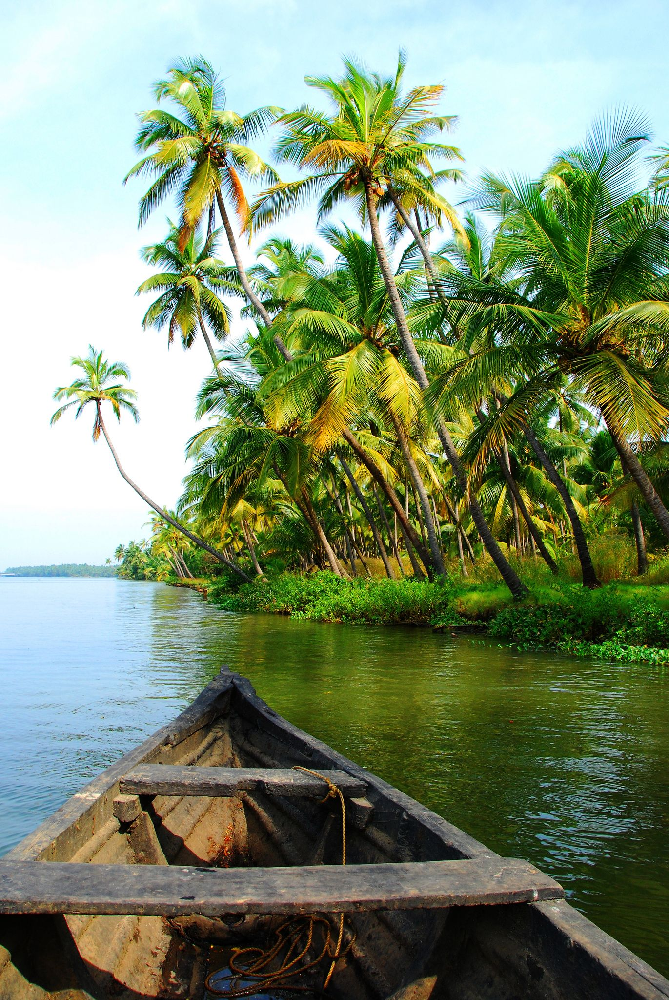

KERALA

- It is divided into 14 districts with the capital being Thiruvananthapuram. Malayalam is the most widely spoken language and is also the official language of the state.[19]s.
- In the 15th century, the spice trade attracted Portuguese traders to Kerala, and paved the way for European colonisation of India.
- Known for its diverse landscapes including the tranquil backwaters, pristine beaches, and lush green hills
- The region's prominence in trade was noted in the works of Pliny as well as the Periplus around 100 CE.
- Other major cities include Kochi (Cochin), a major port city and commercial hub; Kozhikode (Calicut), known for its trading history; Kollam, a coastal city; Thrissur, the cultural capital; and Alappuzha (Alleppey), famous for its backwaters.
- The Chera dynasty was the first prominent kingdom based in Kerala
- Known for its spicy and flavorful dishes, Kerala's cuisine features coconut as a staple ingredient in many dishes.